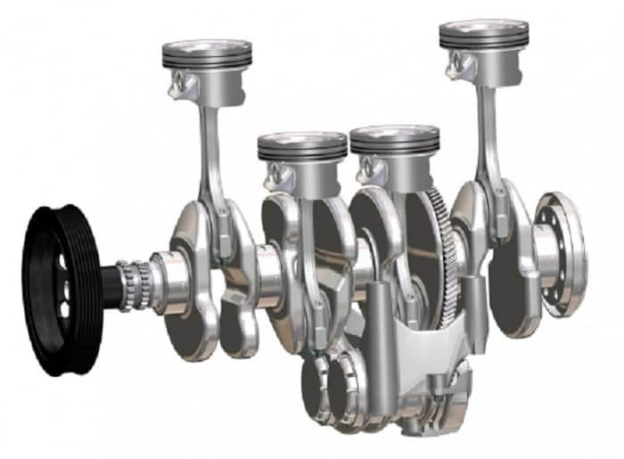
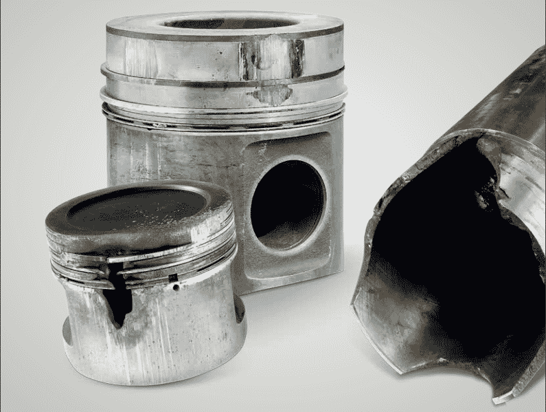
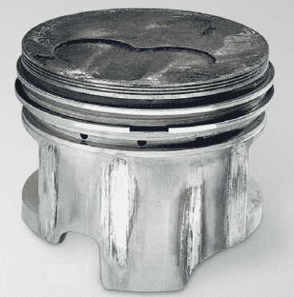
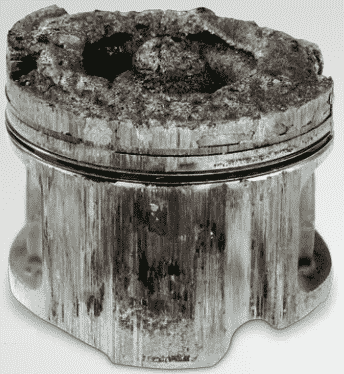
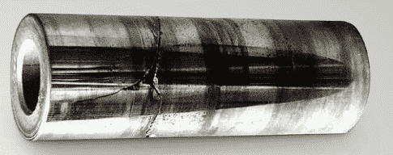

Piston nedir? – ne işe yarar? Motorlarda bulunan silindirin bir ucu dairesel biçimde bir alan içerir. Bu alandan silindir içerisine yerleştirilmiş pistonlar, yakıt mekanizması ile açığa çıkan enerji tarafından aşağı yukarı doğru hareket ettirilerek enerjinin harekete dönüşümünü sağlamaktadır.
Pistonlar silindir içerisinde 1000’de 7 oranında boşluk bulunacak biçimde hassasiyetle yerleştirilmektedir. Arabadaki silindir sayısına göre 4 ve 8 arasında piston bulunmaktadır. Silindirin içerisinde yerleşmiş olan bu parça yine silindir biçiminde olup metalik bir maddeden imal edilmektedir.
Pistonlar biyel kolları ile alt yüzeyden bağlantılıdır. Biyel kolunun bir kolu pistonlarda iken diğer kolu alt kısımda hareketi sağlayan krank miline etki etmektedir. Bujiler ateşlemeyi başlattıktan sonra açığa çıkan enerji pistonları hareket ettirir. Hareket eden pistonlarsa iç yüzeyinden kendisine bağlı olan biyel kollarını çevirerek hareket mekanizmasını başlatmış olur. Bütün otomobil çeşitlerinde bulunan bu parça çeşitli metal alaşımlar kullanılarak üretilmektedir. Genelde alüminyum ya da karbon çelik alaşım kullanılarak imal edilen bir parçadır.
Ancak günümüz teknolojisi ile üretilen enjeksiyonlu motorlar hızlı devinim gücüne sahip olduğundan alüminyum alaşımı ya da karbon çelik alaşımını dahi zaman içerisinde deforme edebilmektedir. Bu durumu önlemek amacıyla var olan en sert metal kaplama yapılmaktadır. Titanyum kaplama olarak adlandırılan bu kaplama deformasyona karşı dirençli olduğu gibi darbe, sıcaklık ya da soğukluk gibi olumsuz koşullara da dayanıklılık göstermektedir. Kaplaması bu şekilde gerçekleştirilen pistonlar tabii ki daha maliyetli olmaktadır.
Ancak yaklaşık olarak 50.000 – 90. 000 km aralığında değişim yapılması gereken alüminyum pistonların maliyeti zaman içerisinde daha da artış göstermektedir. Bu nedenle kısa vadede sadece pistonlarda değil bütün araba parçalarında dayanıklılığı arttırmak amacıyla titanyum kaplama kullanılacaktır. Bununla birlikte pistonlar hareket mekanizmasını başlatan temel parçadır. Bu temel parçadaki sürekli hareket durumu her ne kadar sert maddeyle kaplanırsa kaplansın korozyonu önlenemeyecektir. Ancak korozyon durumu geciktirilebilir. Bu nedenle çoğu piston indüksiyonla sertleştirilmiş şekilde piyasaya sürülmektedir.
Bir önceki makalemizde açıkladığımız segman parçalar pistonun yüzeyinde de bulunmaktadır. Segmanların piston yüzeyinde bulunmasının temel sebebi silindir içerisine hava ve yağların dolmasını engeller. Bir silindirin içerisine yağ ya da hava sürekli dolup boşaltıldığı zaman başlangıçta problem olarak gözükmeyen bu durum zaman içerisinde silindir içerisinde tortulaşmaya neden olur. Tortulaşma pistonun önce verimini azaltır daha sonra tamamen çalışmasını engeller. Segmanlar ayrıca pistonun silindire tutunmasını sağlar. Bir kolu silindirden aşağı doğru uzanır ve bağlı olduğu mekanizmayı oluşturduğu hareket enerjisi ile hareket ettirmeye başlar.
Piston ateşlemeli, patlamalı motorlarda bulunan hayati bir parça olduğundan eksikliği durumunda silindir de üretilen enerji harekete dönüştürülemez ve araç çalışmaz. Bunun dışında aracın motor çevresinde meydana getirdiği yağlanmalar ve hava silindir içerisindeki odalara dolarak yağ yanıkları oluşturur, motor performansını sıfıra indirir.
Hava filtresi, vakum pompası ve yakıt, buji gibi motora etki eden parçalar koordineli olarak çalışmaktadır. Tüm bu parçaların koordinasyonu ile hava yakıt karışımı silindir içerisine bujiler yardımıyla ateşlenerek gönderildiğinde bir enerji açığa çıkar.
Açığa çıkan enerji pistonların silindir içerisinde aşağı yukarı doğru hareket etmesini sağlar. Pistonlar kendisine bağlı bir kol aracılığıyla kendi alt yüzeyindeki parçaya bağlıdır.
Yukarı doğru hareket ederken oluşan hareket enerjisi kendisine bağlı olan kolu aşağı doğru ittiğinde, var olan tasarım neticesinde dikey eksendeki hareket yatay eksene çevrilir.
Bu mekanizm sadece otomobil piyasasında değil kompresör, su motoru gibi makinelerde de kullanılmaktadır. Örneğin su motorlarında yakıtın yanması durumunda oluşan gaz basıncı kullanarak suyun yer değiştirmesi sağlanmış olur.
Piston yazımızda belirtildiği üzere yanmalı motorlarda silindirde oluşan enerjiyi hareket enerjisine dönüştürmektedir. Bu hareket enerjisine dönüştürme işlemi pistonun asıl görevidir. Piston silindirin açık ve alt kısmında olan krank miline bağlıdır. Silindir içerisindeki enerji pistonu hareket ettirdikçe krank milinin dairesel mekanizması da döner ve hareket bu şekilde sağlanmış olur.
Piston ilk hareketi bujilerin ateşleme yani kıvılcım çıkarma işlemi ile başlamaktadır. Pistonlar temelde bir otomobilin çalışma mekanizmasının merkezinde yer alır. Çünkü yakıtın aktarılması için kanallar, temizlenmesi için filtreler, basınçlı hale getirilmesi için vakumlu pompalar, ateşlenmesi için bujiler yakıt enerjisini hareket enerjisine dönüştürmek üzerine düzeneğe yerleştirilmiştir.
Hareket oluştuktan sonra biyel kolu krank mili, kam mili, triger kayışı mekanizması da oluşan hareketi iletmek ya da eksenini değiştirmek için bulunur. Yani asıl hareket pistonlarda gerçekleşir geri kalan kısım sadece iletmekle veya çevirmekle görevlidir.

Benzin motorlarında kullanılan piston çeşitleri; düz etekli pistonlar, düz yarı diyagonal pistonlar, T yarıklı pistonlar, U yarıklı pistonlar ve Termik pistonlar şeklinde ifade edilebilir. Hepsi temelde aynı görevi gerçekleştirmekle beraber ısı, üretim malzemesi, şekil, kullanıldığı motor çeşitleri açısından birbirinden farklılık gösterirler.
Örneğin T yarıklı pistonlar alüminyum alaşımlı malzemeden imal edilmektedir. Bunun sebebi bu alaşım türünün ısıyı bünyesinde tutmadan hızlıca geçirmesidir. U yarıklılar ağır hizmet tipi motorlarda tercih edilmektedir.
Bu tip pistonlar genellikle dökme demirden yapılırlar ve nadiren de olsa alüminyum alaşımla kaplanmaktadır. Bu şekilde adlandırılmasının temelinde etek kısmında T pistonlarının aksine yarık olmamasıdır. Yarıklar pistonun daha rahat hareket edebilmesi için silindir yüzeyine açılan yarıklardır. Kullanılan motorun çeşidine göre U ve T tipleri bulunabilmektedir.
Temelde çok fark olmasa da U ve T tipi pistonlarda bulunan yarıklarda segmanlar yerleştirilmiştir. Bu tipte iç yüzeyde yer alan silindir hem daha rahat hareket etmektedir. Hem de yerleştirilen segmanlar sayesinde tutunma yüzeyi arttırılarak daha dayanıklı hale getirilmiş olmaktadır.
T ve U yarıklı pistonlar benzinli motorlarda öncelikli kullanım göstermektedir. Yani diğer tiplerine oranla daha fazla kullanılmaktadır.

Pistonlar çok küçük parçalar olmalarına rağmen birçok arıza türü mevcuttur. Bu arıza türlerini; Piston eteğinde meydana gelen arızalar, Piston başında meydana gelen krapaj arızaları, Segmanlarda meydana gelen arızalar, Piston piminde meydana gelen arızalar ve krapajlar, Silindir ve gömleklerde meydana gelen arızalar biçiminde sıralayabiliriz. Bu arıza türlerini detaylandıracak olursak.
Yazımızın üst kısımlarında belirtildiği üzere bir piston silindir içerisinde 1000’ de 7 oranında boşluk olacak şekilde yerleştirilmelidir. Bu boşluk sürtünmeden dolayı meydana gelecek termik hasarı önlemek adına oluşturulmuş yağ boşluğudur. Montaj esnasında boşluksuz yada bu orandan daha küçük bırakılan boşluklar neticesinde hareket eden iç silindir dıştaki silindirden daha fazla ısınıp genleşeceğinden dış silindirin iç yüzeyinde krapaj problemi meydana gelir. Bununla birlikte çoğu zaman iç tarafta bulunan silindir alüminyumdan imal edilir. İmal edildiği alüminyumun genleşme kat sayısı dış silindirik yapıdan daha fazla ise boşluk standart olduğu halde bu krapaj hatasına neden olabilmektedir.
Bu hatanın gerçekleşme sırasını şu şekilde belirtebiliriz. Öncelikle boşluksuz piston çalışmaya başladığında iç kısımda bulunan yağ hareket esnasında bulunduğu konumu terk eder. Aynı zamanda yağda yanma gerçekleşebilir. Daha sonra metal yüzeylerinde sürtünmeler meydana gelir. İç yüzeydeki silindirin genleşme katsayısı daha yüksektir. Sürtünmeden kaynaklanan ısınmayla genleşir ve deformasyona neden olur.
Yağ Boşluğunun yetersiz olmasından kaynaklanan krapaj arızaları durumunda ortaya çıkan karakteristik belirtiler.
Sürtünmeden kaynaklı kararan iç piston yüzeyi ve sürtünme neticesinde parlak biçimde oluşan keskin çizgiler. Yine sürtünmeden dolayı oluşan deformasyon noktaları ve krapaj yerleri en belirgin özelliklerdendir.

Yandaki resimde belirtildiği üzere bu hasarın meydana gelmesi durumunda birden fazla krapaj noktasına raslanabilir.
Aynı zamanda bu krapajlar silindirik piston neticesinde paralel biçimde nizami doğrultuda dizilim gösterebilir.
Resimde de dikkat edileceği üzere koyu renkli bölmelerden keskin parlak sürtünme çizgileri oluşabilir. Segman halkalarında hasar görülmez. Çünkü olay iç ve dış silindir arasındaki sürtünmeden dolayı gerçekleşir.
Hasarın meydana gelmesini sağlayacak olası sebepler nelerdir?
Silindir deliğinin yeteri büyüklükte olmaması, iç ve dış silindir arasındaki gönye ayarı, bazı noktaların yeteri kadar yağlanamamış olması, silindir kapağının gereğinden fazla sıkılmış olması ya da gevşek bırakılması, krapajlı veya yağsız temas noktaları, silindirin iç yüzeyinde tortuların birikmiş olması gibi durumlar bu hasarın oluşmasına neden olabilir.
Buji ve Diğer sebeplerden dolayı meydana gelen ateşleme problemleri
Bilindiği üzere motor da bulunan yanma odaları içerisindeki kızgın bir parça tarafından erken ateşleme işlemi başlatılır. Bu kızgın parça sürekli bir atak halinde olup aracın her çalıştırılmasında etkin hale gelmektedir. Dolayısıyla zamana bağlı olarak üzerinde meydana gelen tortular parçanın verimini azaltır. Parça üzerinde yer alan birikintiler ateşlemenin yanlış parçalar üzerinde, yanlış zamanda etkili olmasına neden olur. Bu durumda piston tabanında meydana gelen sıcaklığın aşırı yükselmesine etki eder. Sıcaklığın aşırı yükselmesi ve birkaç saniye devam etmesi durumunda piston tabanı erimeye başlar. Bir topun yarısı biçimindeki yanma odalarında meydana gelen bu arıza pistonların alt ve üst tabanlarında dairesel erimelere neden olur ve pistonun devre dışı kalmasına neden olur.
Yakıt taşmasından kaynaklanan yanma
Vakum pompası ve presleme basıncının yetersiz olduğu durumlarda yakıtın yanması yetersiz kalmaktadır. Yetersiz yanmalar neticesinde segmanlar ve silindir yüzeyleri ve pistonlar kesikli biçimde etkisiz hale gelir. Böyle bir durumda motor daha yüksek güç harcamaya başlar ve yağ tüketimi had safhaya ulaşır. Yağın tüketimi durumu sıcaklığın aşırı yükselmesine neden olur daha sonra da sürtünmeden kaynaklı deformasyon ve akabinde delikler meydana gelir.
Hasarın oluşmasındaki Temel Nedenler
Pistonların tepelerinde ve silindiri bağlayan valf kapaklarında ön ateşleme sisteminden kaynaklanan kızgın parçaların sürekliliği öncelikli nedendir. Daha sonra motorda yer alan yanma bölmesine hava filtresinden kaynaklı bir arızadan yeterli havanın alınamaması. Çeşitli sebeplerden dolayı motorda meydana gelen aşırı ısınmalar da bu problemin oluşmasına neden olabilir. Bujilerin ısı değerinin düşük olması, valf boşluğunun küçük olması gibi nedenler de etkili olmaktadır.

Piston pimlerinin oturduğu yuvada genellikle yağ olmaz ancak yağların taşma yada başka alanlara aktarılması sonucunda meydana gelen püskürme ile orada biriktirdiği miktarda yağ bulunur. Dışarıya açılan yüzeyi nedeniyle orada yağ tutmak mümkün değildir. Bu nedenle pim yuvalarında meydana gelen arızalar kırılma tipinde kendini göstermektedir. Üst kör noktaya doğru daha dayanıklı bir yapı gösteren pistonların pim krapajı aşağı doğru inen çatlaklarla ortaya çıkmaktadır. Bu problemin olası nedeni aşırı mekanik yük olmakla birlikte zamana bağlı sürtünme kuvvetiyle de oluşabilmektedir.
